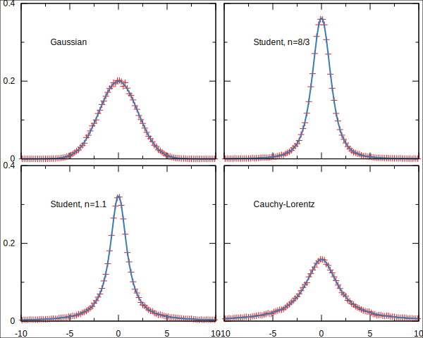
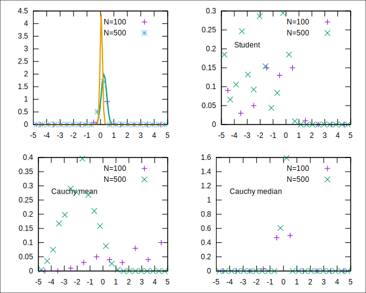
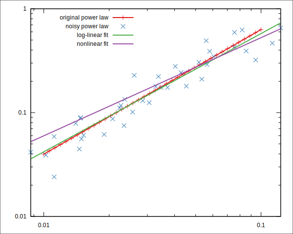
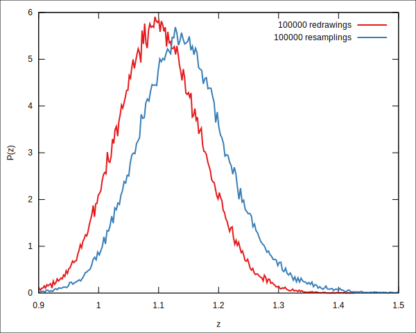
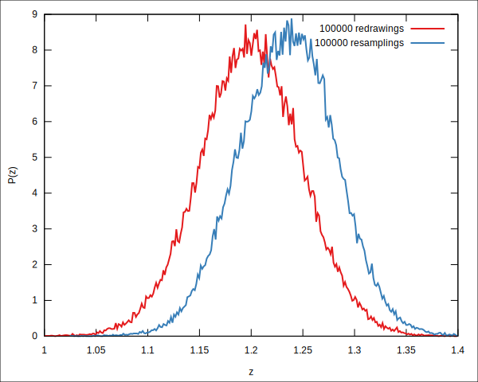
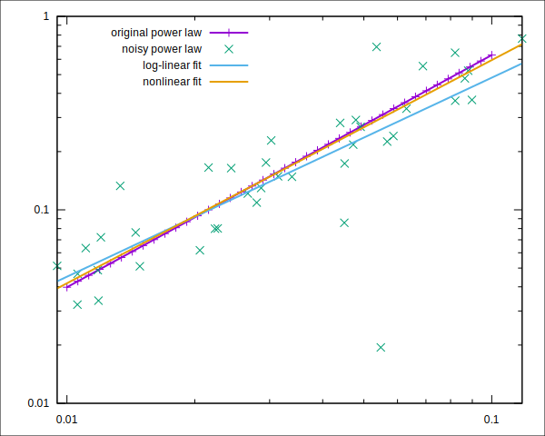
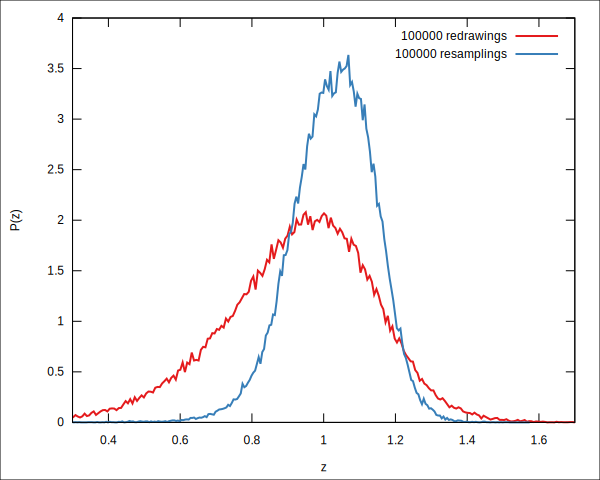
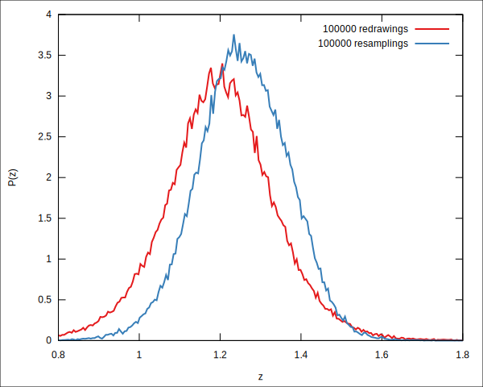

Estimating experimental errors with resampling
Table of Contents
We test here a resampling method for error estimation, using synthetic data with known distributions. We use the resampling procedure as described in Leuzzi, Marinari, and Parisi 2020, chap. 5.
Here we assume the experiment produces a set of (scalar) samples \(\{x_i\}\), \(i=1\ldots N\), distributed according to an unknown probability distribution \(D(x)\). From these data we compute some function \(f(\{x_i\})\) which is our estimate of a quantity \(\Phi\) what we seek to determine from the experiment. In the simplest case, the \(x_i\) are repeated measurements of some physical magnitude of interest, and \(f(\{x_i\})=\frac{1}{N}\sum_i x_i\) is the sample mean and \(\Phi=\mu\), i.e. we are estimating the mean of \(D(x)\), which we assume is the true value of the physical quantity.
To quantify the error on our estimate for \(\Phi\), we would like to know the probability distribution \(P(f |x_i)\), i.e. the distribution of our estimate, given that our experimental results are what they are.
The resampling method builds an estimate of \(P(f|x_i)\) by computing \(f\) on many artificial experimental sets. The artificial sets are constructed with the prescription that each of the original data points are picked with probability 1/2 (or put in other words, each data point is reweighed with a weight that is 0 or 1 with equal probability).
The procedure is implemented in the following Julia function:
using Statistics """Do `Nrs` resamplings of data vector `X` and return the set of values resulting from applying `f` to each resampling.""" function resample(X,Nrs,f=Statistics.mean,RNG=Random.GLOBAL_RNG) fs=[] for _=1:Nrs rsamp=eltype(X)[] for x in X if Random.rand(RNG,Float64)>0.5 push!(rsamp,x) end end push!(fs,f(rsamp)) end return fs end
resample
1. Synthetic data
To test the above procedure we will generate pseudo-random data sets centred around zero and distributed according to the following well-known distributions:
\begin{align*} D_G(x;\mu,\sigma) &= \frac{1}{\sqrt{2\pi\sigma^2}} \exp\left[\frac{(x-\mu)^2}{2\sigma^2}\right], & \text{Gaussian}\\ D_S (x; \nu) &= \frac{\Gamma( \frac{\nu+1}{2})}{\sqrt{\nu\pi} \Gamma(\nu/2)} \left( 1 + \frac{x^2}{\nu} \right)^{-\frac{\nu + 1}{2}}, & \text{Student's t} \\ D_c (x; \mu, \sigma) &= \frac{1}{\pi \sigma} \frac{1}{ 1 + \left(\frac{x -\mu}{\sigma} \right)^2 }, & \text{Cauchy-Lorentz} \end{align*}We shall set \(\mu=0\) and \(\sigma=2\) for the Gaussian and Cauchy-Lorentz distributions, and use two values of \(\nu\) for the Student's t-distribution, so that the first moments are:
| Mean | Variance | |
| Gaussian σ=2 | 0 | 4 |
| Student ν=8/3 | 0 | 4 |
| Student ν=1.1 | 0 | undef |
| Cauchy-Lorentz σ=2 | undef | undef |
Student's-t with \(\nu=1.1\) has mean but no variance, while the Cauchy-Lorentz distribution does not even have a defined mean (it's median is equal to \(\mu\), or zero in our case). We can generate pseud-random numbers with these distributions with Julia's Distributions package.
using Random,Distributions
σ=2
σsq=σ^2
gauss=Normal(0,σ)
ν=2σsq/(σsq-1)
student_narrow=TDist(ν)
νw=1.1
student_wide=TDist(νw)
cauchy=Cauchy(0,σ)
Cauchy{Float64}(μ=0.0, σ=2.0)
This is how the distributions look. Points are histograms computed from a set of 105 random numbers. We usually will not have the luxury of such a large data set in experiments, but for now it serves as a check that our pseudo-random numbers are what we need them to be.

2. Estimation of the mean
Let's try the resampling method to put a confidence interval on the estimation of the mean. Below we draw synthetic samples of \(N=10\) to 5000 data points, compute the average of those as an estimate of the mean. We then do as many resamplings as there are data points, then compute the population standard deviation of the means of each resampling. We give in the tables below the estimation of μ with a confidence interval of twice the standard deviation, the estimation of the s.d. of the mean, and the simple estimate of the s.d. using the population s.d divided by \sqrt{N}, \[ \left\{ \frac{1}{N(N-1)} \sum_i \left( x_i-\overline{x}\right) \right\}^{1/2}.\]
2.1. Gaussian case
The Gaussian case is the simplest, here we expect the simple estimation to work well, plus we know exactly the s.d. of the estimation of \(\mu\) (it is \(\sigma/\sqrt{n}\)). We produce the table with the following code:
using Printf println("| N | μ estimation | σ est | σ naive est | Actual σ |") for Ns in [10,20,50,100,200,500,1000,2000,5000] A=rand(gauss,Ns) μ_e=Statistics.mean(A) rA=resample(A,Ns) σ_e=sqrt(var(rA)) @printf "| %4d | %7.4f±%6.4f | %7.4f | %7.4f | %7.4f | \n" Ns μ_e 2σ_e σ_e sqrt(var(A)/(Ns-1)) σ/sqrt(Ns) end
| N | μ estimation | σ est | σ naive est | Actual σ | | 10 | -0.0930±1.2391 | 0.6196 | 0.6993 | 0.6325 | | 20 | 0.0966±0.9641 | 0.4821 | 0.4271 | 0.4472 | | 50 | 0.0011±0.5113 | 0.2556 | 0.2511 | 0.2828 | | 100 | 0.3426±0.3665 | 0.1832 | 0.1837 | 0.2000 | | 200 | -0.0676±0.2800 | 0.1400 | 0.1494 | 0.1414 | | 500 | 0.0061±0.1737 | 0.0869 | 0.0867 | 0.0894 | | 1000 | 0.0160±0.1400 | 0.0700 | 0.0664 | 0.0632 | | 2000 | -0.0049±0.0886 | 0.0443 | 0.0443 | 0.0447 | | 5000 | -0.0378±0.0547 | 0.0274 | 0.0279 | 0.0283 |
2.2. Student's t-distribution
First we do, with similar code as above, the "narrow" t-distribution i.e. with finite variance equal to 4, as in the Gaussian case.
| N | μ estimation | σ est | σ naive est | | 10 | 1.1900±1.6914 | 0.8457 | 0.7954 | | 20 | -0.1149±0.7712 | 0.3856 | 0.2818 | | 50 | -0.5587±0.7726 | 0.3863 | 0.3429 | | 100 | 0.0011±0.3239 | 0.1619 | 0.1723 | | 200 | 0.0948±0.4260 | 0.2130 | 0.2016 | | 500 | 0.0535±0.3885 | 0.1942 | 0.1984 | | 1000 | 0.0365±0.1171 | 0.0586 | 0.0581 | | 2000 | -0.0260±0.0859 | 0.0429 | 0.0427 | | 5000 | -0.0295±0.0555 | 0.0278 | 0.0280 |
Now the t-distribution with undefined variance. Things are not good here, in the sense that the error is not decreasing systematically with more samples. However, both the resampling and naive estimations of standard deviation warn us about that.
| N | μ estimation | σ est | σ naive est | | 10 | 2.5102± 6.4034 | 3.2017 | 3.4710 | | 20 | 1.1654± 4.8692 | 2.4346 | 2.7253 | | 50 | -2.3050± 3.0301 | 1.5150 | 1.5365 | | 100 | 2.2331± 4.3243 | 2.1621 | 2.1756 | | 200 | 0.3414± 0.7339 | 0.3670 | 0.4036 | | 500 | -1.0585± 3.6381 | 1.8191 | 1.8011 | | 1000 | -0.0966± 2.2454 | 1.1227 | 1.1519 | | 2000 | 1.5855± 4.0281 | 2.0141 | 2.0182 | | 5000 | 32.6215±68.3293 | 34.1647 | 34.1605 |
2.3. Cauchy-Lorentz
This distribution doesn't have a mean, so it's not surprising that errors are not decreasing with \(N\) here.
| N | μ estimation | σ est | σ naive est | | 10 | -0.5017± 4.9469 | 2.4735 | 1.7552 | | 20 | -1.2743± 7.6128 | 3.8064 | 3.7377 | | 50 | 5.5722±10.7263 | 5.3631 | 5.9061 | | 100 | -2.3583± 4.0697 | 2.0349 | 2.0916 | | 200 | 0.3391± 3.1496 | 1.5748 | 1.5831 | | 500 | -0.2632± 7.1307 | 3.5653 | 3.7054 | | 1000 | 0.2794± 2.5352 | 1.2676 | 1.2566 | | 2000 | 12.3297±20.5714 | 10.2857 | 10.2826 | | 5000 | 0.1749± 2.4781 | 1.2390 | 1.2605 |
Things work much better with the median. The naive error estimate has no meaning here, but the resampling estimate is satisfactory.
| N | μ estimation | σ est | σ naive est | | 10 | -1.2699± 2.7900 | 1.3950 | 0.8036 | | 20 | -0.6718± 0.7847 | 0.3924 | 4.9249 | | 50 | -0.6651± 1.1596 | 0.5798 | 3.7524 | | 100 | 0.3848± 0.7916 | 0.3958 | 1.1779 | | 200 | 0.0793± 0.3939 | 0.1969 | 2.3231 | | 500 | -0.0357± 0.3547 | 0.1773 | 87.3314 | | 1000 | 0.0540± 0.2017 | 0.1009 | 4.1377 | | 2000 | 0.1120± 0.1353 | 0.0676 | 8.3017 | | 5000 | -0.0269± 0.0814 | 0.0407 | 0.6318 |
The plots of the distributions below illustrate a bit what is going on.

3. Fit parameters
How does resampling work when trying to put an error to parameters obtained from curve-fitting? We try resampling on fake experimental data created by adding noise to a power law \(y=ax^z\). We'll use the next function to draw a simulated dataset with errors around the power law, leaving the error distribution to be decided upon later. We add noise both on \(x\) and \(y\) and discard errors that would make values negative (this we want from a power law with real exponent, plus, we'll use the logarithms of the data points to do the fitting).
function draw_dataset(a,z,N,xerror,yerror;logxmin=-2,logxmax=-1) x=10 .^range(logxmin,logxmax,length=N) y=a*x.^z xe=-ones(size(x)) ye=-ones(size(y)) for i=1:length(x) while xe[i]<0 xe[i]=x[i]+xerror(x[i]) end while ye[i]<0 ye[i]=y[i]+yerror(y[i]) end end return x,y,xe,ye end
draw_dataset (generic function with 1 method)
3.1. Gaussian errors
Let's start with a 40-point dataset obtained using \(a=10\), \(z=1.2\), and relative errors distributed with a Gaussian with \(\sigma=0.2\) in both coordinates.
Random.seed!(1125) actual_A=10; actual_z=1.2 Npoints=40 error_xdist=Normal(0,0.2) error_ydist=Normal(0,0.2) errx(x) = x*rand(error_xdist) erry(y) = y*rand(error_ydist) x,y,xe,ye = draw_dataset(actual_A,actual_z,Npoints,errx,erry);
We'll try either linear fit of the logarithms or a nonlinear fit. Since we are assuming uniform relative errors, for an unweighted fit it makes more sense to use the logarithms.
function fitgp_log(x,y) @gp "\$fitdata"=>(log10.(x),log10.(y)) :- @gp :- "f(x) = z*x+logA" :- @gp :- "fit f(x) \$fitdata via z,logA" :- vars=gpvars() return vars.z,10^vars.logA,vars.z_err end function fitgp_nl(x,y) @gp "\$fitdata"=>(x,y) :- @gp :- "f(x) = A*x**z" :- @gp :- "fit f(x) \$fitdata via z,A" :- vars=gpvars() return vars.z,vars.A,vars.z_err end using Polynomials function fitjl_log(x,y) f=Polynomials.fit(log10.(x),log10.(y),1) return coeffs(f)[2],10^coeffs(f)[1],0 end
fitjl_log (generic function with 1 method)
This is how our noisy dataset looks like together with the fits. From now on we shall only use the log-linear fit with the Julia code, which does not give errors but is faster.
From linear fit of the logs (gnuplot): z = 1.13868780170677, s.d=0.0638290280504025 From linear fit of the logs (Julia): z = 1.138687795950956 From nonlinear fit: z = 0.945143141074797, s.d=0.0847012187377099

Now we shall compute the distribution of \(z\) using the resampling method with the dataset shown above, and compare it with the distribution obtained from drawing many datasets with the same noise distribution.
function redraw_fit(Nsamp,drawfunction,fitfunction) zs=Float64[] for _=1:Nsamp x,y,xe,ye = drawfunction() z,A,z_err=fitfunction(xe,ye) push!(zs,z) end return zs end function resample_fit(xe,ye,Nrs,fitfunction) zs=Float64[] for _=1:Nrs xrs=Float64[] yrs=Float64[] for i in eachindex(xe) if Random.rand(Float64)>0.5 push!(xrs,xe[i]); push!(yrs,ye[i]) end end z,A,z_err=fitfunction(xrs,yrs) push!(zs,z) end return zs end
resample_fit (generic function with 1 method)
sd from resampling = 0.07696983166805006 sd from redrawing = 0.07058433611134453

Now we repeat the procedure but without errors in x
Fit of one sample: z=1.23549774078608, s.d = 0.0392945637464569 sd from resampling = 0.04663230336560641 sd from redrawing = 0.049139038124389696

In summary: for Gaussian errors, the resampling and Gnuplot s.d. estimates are quite good. The unweighted fit seems to introduce a bias towards smaller exponents in the case of uniform relative errors in x.
3.2. Non-Gaussian errors
We now try to use resampling using a broader distribution for the errors. We'll use again 40 points, \(y=a x^z\) with \(z=1.2\), then add noise to them using a rescaled Student's distribution with undefined variance:
Random.seed!(1125) actual_A=10; actual_z=1.2 Npoints=40 νx=1.1 xerror_dist=TDist(νx) νy=1.1 yerror_dist=TDist(νy) xerror(x) = 0.1*x*rand(xerror_dist) yerror(y) = 0.2*y*rand(yerror_dist) x,y,xe,ye = draw_dataset(actual_A,actual_z,Npoints,xerror,yerror);
From linear fit of the logs (gnuplot): z = 1.02884962690192, s.d=0.123669598850099 From linear fit of the logs (Julia): z = 1.028849480357536 From nonlinear fit: z = 1.15350070116037, s.d=0.141987553786144

The distribution of exponents with resampling and with redrawing. The bias towards smaller exponents is also seen. s.d. from resampling is smaller that actual s.d.
sd from resampling = 0.1149518870663573 sd from redrawing = 0.20946558038211066

Now without errors in the abscissas. Here there is no bias, and the resampling sd estimate is quite reasonable.
Fit of one sample: z=1.25460546653145, s.d = 0.0935657648424533 sd from resampling = 0.11234109127420418 sd from redrawing = 0.13691383411049807
